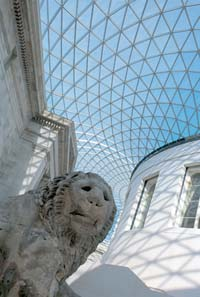

|
|
|
|
Il Great Court è una piazza coperta nel cuore del British Museum. Prima dell'inaugurazione, nel dicembre 2000, questo spazio era stato inaccessibile al pubblico per ben 150 anni. Il British Museum è una struttura edificata appositamente e in origine presentava un cortile aperto al centro. Tuttavia, ben presto l'espansione della collezione della biblioteca richiese aree supplementari di magazzino ed una sala per i Readers, quindi fra il 1854 e il 1857 si edificò uno stabile circolare, all'interno di questo spazio aperto, a cui col passare del tempo si congiunse un vero e proprio dedalo di scaffali di volumi, che andarono ad occupare tutto il rimanente spazio. Con la conclusione dei lavori della nuova British Library e il trasferimento delle collezioni di libri a St Pancras nel 1998, fu finalmente possibile rimuovere gli scaffali. Il Great Court occupa una superficie pari a quella di un campo di calcio (90 x 70 metri) e lo studio architettonico Foster and Partners l'ha ripristinato all'uso pubblico. Grazie ad una copertura altamente innovativa in vetro e acciaio, che riveste ognuno dei 3.312 pannelli in vetro, si è creata una struttura totalmente unica e, allo stesso tempo, la piazza coperta più grande d'Europa. Il tetto genera una nuova attrazione architettonica all'interno di uno degli edifici protetti di massimo rilievo a Londra. Il Great Court offre un punto focale per tutti i visitatori del British Museum e rimane aperto fino a tardi la sera, anche dopo la chiusura delle gallerie. Qui è possibile riposarsi e gustare un caffè, acquistare un libro o un souvenir dai negozi del Museo oppure cenare al ristorante che si affaccia sulla storica Reading Room. La sera, il Great Court è un punto d'incontro pieno di vita e sede di numerosi eventi. Tabelloni elettronici ed opuscoli 'What's On' danno informazioni sui vari eventi organizzati nelle gallerie e al Clore Education Centre, a cui si accede dal lato sud del Great Court. Letture consigliate - Per una storia completa del Great Court, alla libreria (Bookshop) del Museo è in vendita il volume The Great Court and the British Museum di R.G.W. Anderson (prezzo: 12,99 sterline).
|
 |

Informazioni
pratiche
| Come
organizzare la visita
| Le
collezioni del British Museum
Visite guidate |
Punti
salienti delle collezioni
| Il
British Museum: brevi cenni storici
Il
Great Court
| La
Reading Room